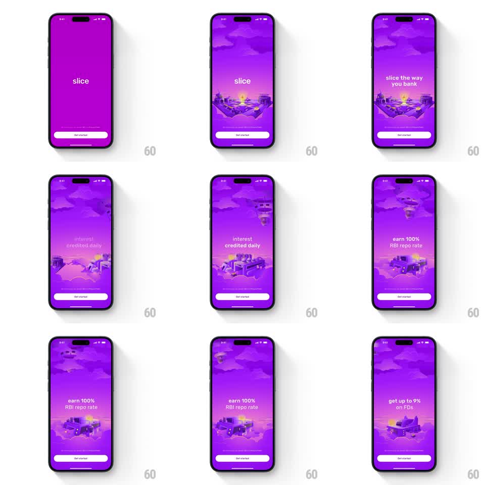

Media
Frame-by-frame

Rebuild this animation 1:1: slice's intro - an auto-playing sequence where 3D isometric bank illustrations rise and slide vertically through a purple parallax sky while one-line pitches crossfade, ending on "get up to 9% on FDs".

Rebuild this animation 1:1: slice's intro - an auto-playing sequence where 3D isometric bank illustrations rise and slide vertically through a purple parallax sky while one-line pitches crossfade, ending on "get up to 9% on FDs". ## Integration Integration: stack-agnostic spec - springs given as stiffness/damping, timed motions as duration + curve; map every value to your framework and animation library of choice. ## Scene Full-bleed purple gradient sky with layered clouds. The "slice" wordmark sits center over a small isometric diorama (bank buildings, a glowing element). A white "Get started" button is pinned at the bottom with fine print above it. The pitch lines: "slice the way you bank", "interest credited daily", "earn 100% RBI repo rate", "get up to 9% on FDs" - each paired with its own isometric scene. ## Motion spec Pattern: auto-playing vertical slide show with parallax clouds and crossfading copy. - The wordmark and first diorama rise into place (translateY 30pt -> 0, spring ~280/20) as clouds drift in at two depths (far layer 4pt/s, near layer 10pt/s, continuous). - Every ~2.4s the scene changes: the current diorama slides up and away (accelerating ease-in, 400ms) while the next rises from below (spring ~280/20, 500ms, 100ms overlap); the pitch line crossfades (300ms, old up, new in) centered above the scene. - The wordmark scales down slightly after the first beat (1 -> 0.85, 400ms) to make room for pitch lines. - Clouds never stop: they parallax continuously through every transition, faster during scene changes (1.5x for 500ms). - The Get started button and fine print stay fixed throughout; the button has a soft shadow pulse (2.8s). ## Calibration - Scene changes are vertical slides, never fades - the dioramas physically travel. - The purple is a specific vivid violet; clouds are lighter tints of the same hue, not white. ## Reduced motion Scenes crossfade (400ms); clouds static. ## Don't miss - Auto-play pacing: no taps needed, roughly 2.4s per scene, and the sequence ends holding on the final scene. - "slice" is lowercase, centered, and always the top visual anchor.